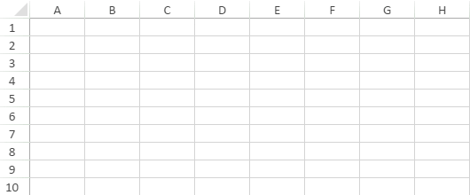

With SpreadJS, you can select cells, rows, columns, or multiple ranges in a worksheet. Often, while selecting a large number of cells or multiple cell ranges, if you mistakenly select some cells and want to deselect it, the whole process of unselecting the entire selection and then reselecting again becomes too cumbersome to handle. SpreadJS not only allows you to save a significant amount of time but also avoid redundancy by enabling users to deselect specific cells from the selected range and customize the selection as per their requirements while working with spreadsheets.
In order to start selecting an area in a worksheet, simply click and drag with the left mouse button to select a block of cells, columns, or rows. You can also use the mouse click and Ctrl key to select multiple ranges of cells.
In order to deselect a selection, simply press the ctrl key or cmd key in the keyboard and use the left, top, right or down arrow keys to deselect the cells that you want. The allowUserDeselect property must be set to boolean "true' in order to enable deselection behavior in a worksheet. By default, this option is set to true. However, if users don't want the deselection behavior while working with SpreadJS, they can set this option to "false".
The following images demonstrate the working of deselection behavior after selecting a range of cells in a worksheet.
The first image shows how to work simultaneously with four selection areas when the deselecting selection task is executed inside the original selection.
The second image shows how to work with less than four selection areas when the deselecting selection task crosses the original selection.
The third image shows how to work with "No selections" when the deselecting selection task is performed within the original selection. In this case, after deselection is executed, an active cell will be added at the beginning of the deselected selection.
Navigation keys are listed in Keyboard Navigation Shortcuts. You can specify the type of selection unit (cell, column, or row) using the selectionUnit method. You can specify the range of the selection (single, range, or multiple range) using the selectionPolicy method. You can set the selection color and border with the options.selectionBackColor and options.selectionBorderColor properties. You can use standard colors and theme colors.
This example selects a range of cells.
| JavaScript |
Copy Code
|
|---|---|
activeSheet.addSelection(4, 0, 2, 2); //activeSheet.clearSelection(); var sels = activeSheet.getSelections(); alert(sels.length); |
|
This example allows single row or block row selection.
| JavaScript |
Copy Code
|
|---|---|
activeSheet.selectionUnit(GC.Spread.Sheets.SelectionUnit.Row); activeSheet.selectionPolicy(GC.Spread.Sheets.SelectionPolicy.Range); |
|
This example sets the color for the selected area and border.
| JavaScript |
Copy Code
|
|---|---|
activeSheet.options.selectionBackColor = "Accent 6"; activeSheet.options.selectionBorderColor = "Accent 1"; |
|
This example shows how to deselect a selection in the worksheet.
| JavaScript |
Copy Code
|
|---|---|
var spread = new GC.Spread.Sheets.Workbook(document.getElementById("ss")); var sheet = spread.getActiveSheet(); // For "Excel like Precision Selection" - users need to set the allowUserDeselect spread option to true. By default this option is true. In case, you don't want "Excel like Precision Selection, you need to set this option to false" spread.options.allowUserDeselect = true; |
|